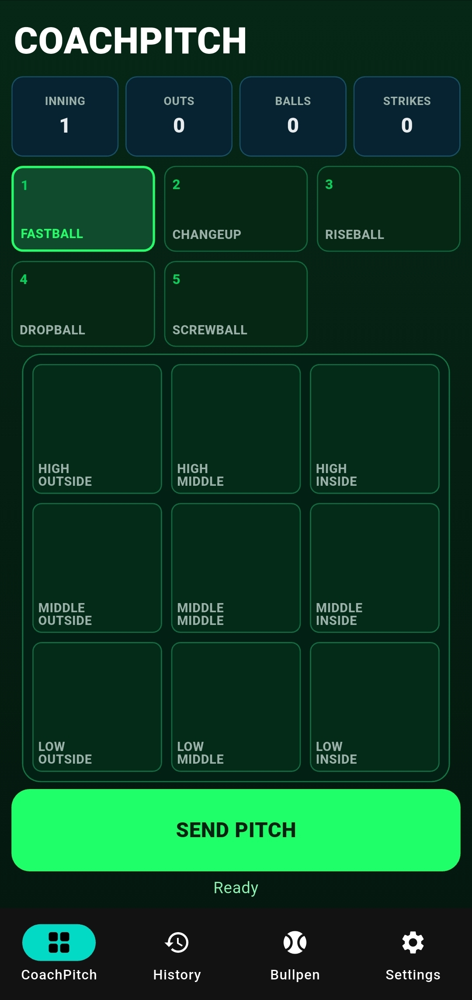
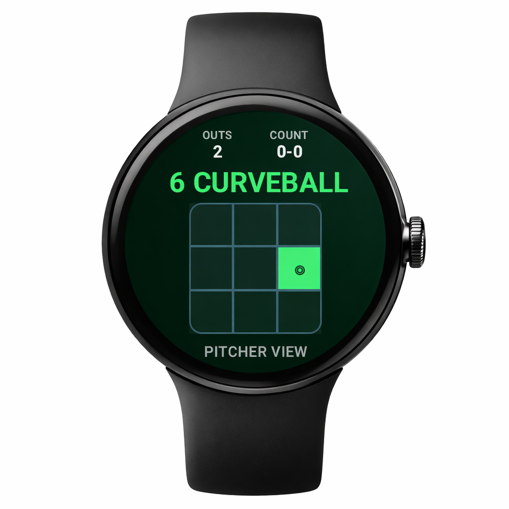
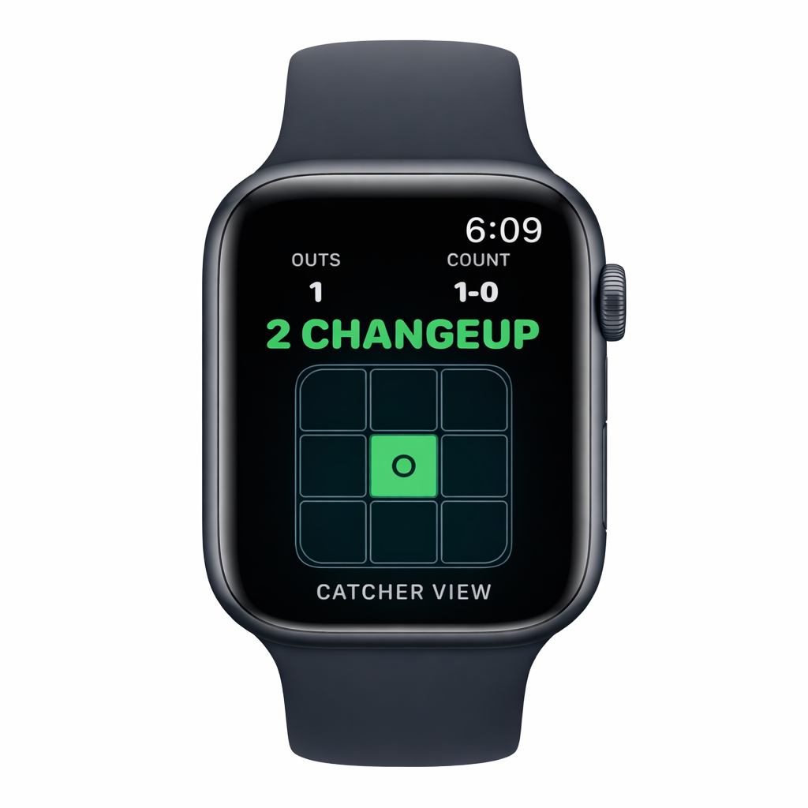
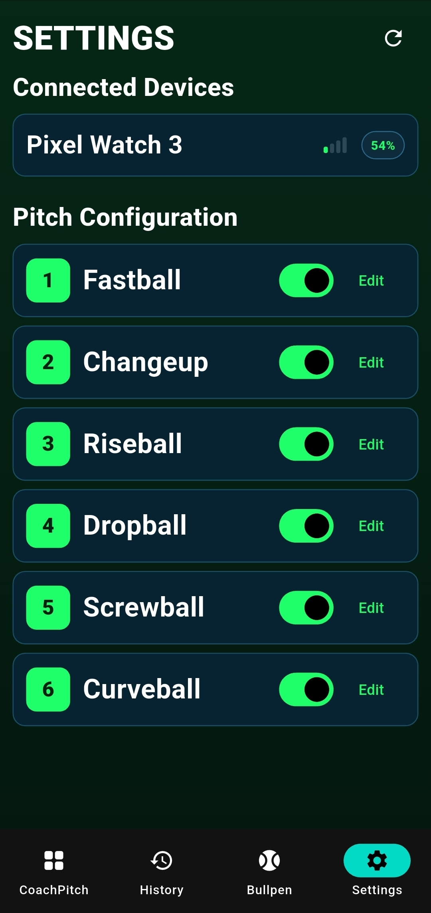
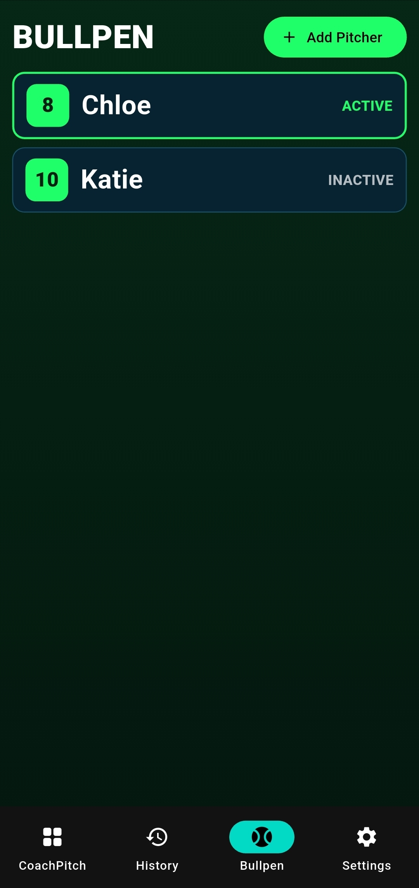
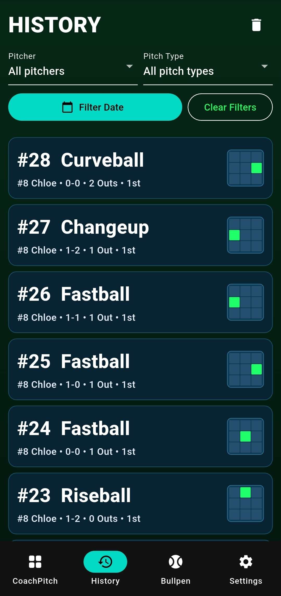

Instant pitch signals
Send pitch calls from the phone to a paired watch in seconds, so coaches and players can move faster without relying on traditional hand signals alone.
CoachPitch helps coaches call pitches faster, cleaner, and more discreetly with paired smartwatch support across iPhone + Apple Watch and Android + Wear OS.



CoachPitch keeps communication simple when the game speeds up. The workflow is streamlined, discreet, and built to feel natural from dugout to device.
Send pitch calls from the phone to a paired watch in seconds, so coaches and players can move faster without relying on traditional hand signals alone.
Built for both iPhone + Apple Watch and Android + Wear OS, giving teams flexibility across the devices they already use.
Call pitch type, choose location, and manage context from one modern interface that keeps the focus on execution.
Review prior calls and patterns from a clear historical view to support communication, planning, and in-game awareness.
Useful for practices, bullpen sessions, and team development environments where efficient repetition matters.
A focused interface with minimal clutter, inspired by modern sports-tech products and designed for real-world usability.
The CoachPitch flow is designed to be intuitive for the coach and instantly readable for the player wearing the paired watch.
Select the pitcher and pitch from the phone app.
Choose location and game context from the streamlined control screen.
Transmit the signal to the paired watch with one clean action.
The player sees the pitch call clearly on the watch without slowing down the moment.
The layout below showcases the current CoachPitch screenshots and mockups from the assets folder.



CoachPitch is currently in private testing. Sign up to hear about beta access, launch updates, and future availability.
This form is ready for you to connect to Formspree, Mailchimp, ConvertKit, or another signup tool. Replace the form action in index.html when you're ready.